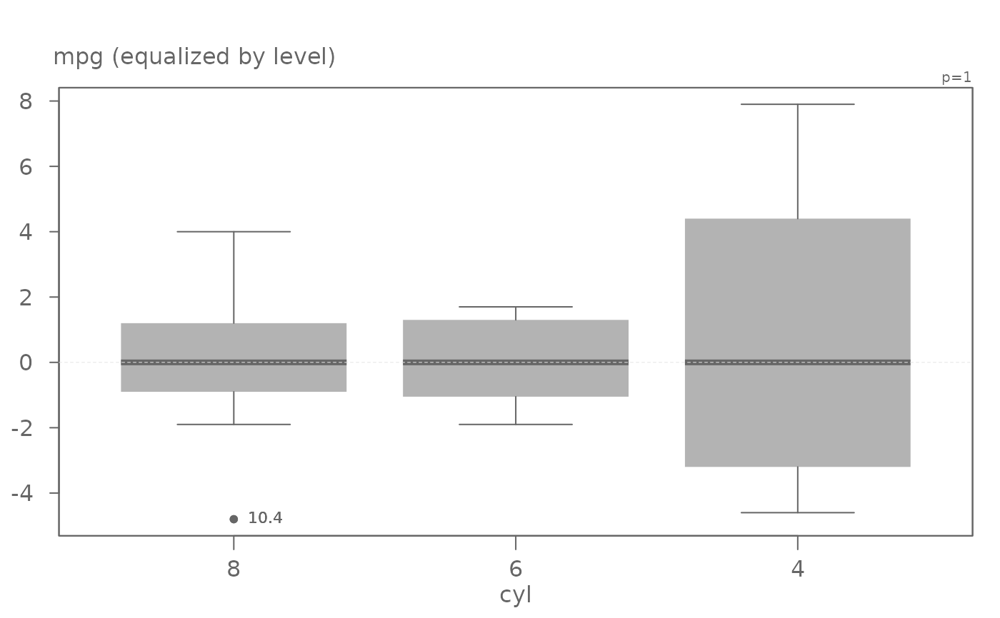
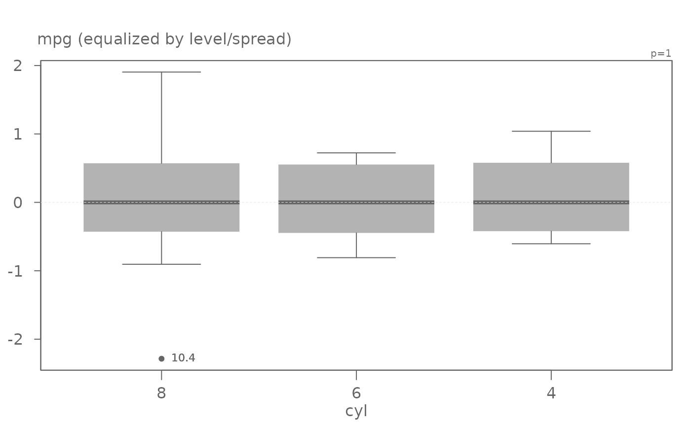

eda_boxls creates boxplots conditioned on one variable while providing the
option to equalize levels and/or spreads.
eda_boxls( dat, x, fac, outlier = TRUE, out.txt, type = "l", horiz = FALSE, outliers = TRUE )
| dat | Data frame name |
|---|---|
| x | Column name assigned to the values |
| fac | Column name assigned to the factor the values are to be conditioned on |
| outlier | Boolean indicating if outliers should be plotted |
| out.txt | Column whose values are to be used to label outliers |
| type | Plot type. "none" = no equalization ; "l" = equalize by level; "ls" = equalize by both level and spread |
| horiz | plot horizontally (TRUE) or vertically (FALSE) |
| outliers | plot outliers (TRUE) or not (FALSE) |
# A basic boxplot (no equalization) eda_boxls(mtcars,mpg, cyl, type="none", out.txt=mpg )# Boxplots equalized by level eda_boxls(mtcars,mpg, cyl, type="l", out.txt=mpg )# Boxplots equalized by level and spread eda_boxls(mtcars,mpg, cyl, type="ls", out.txt=mpg )# Hide outlier eda_boxls(mtcars,mpg, cyl, type="ls", out.txt=mpg , outlier=FALSE)